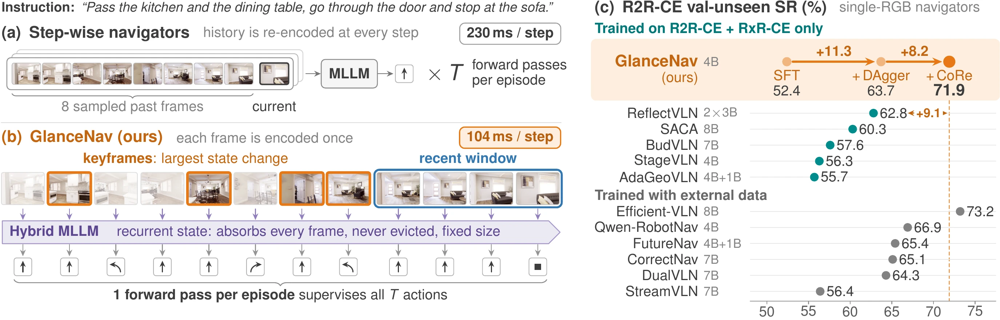
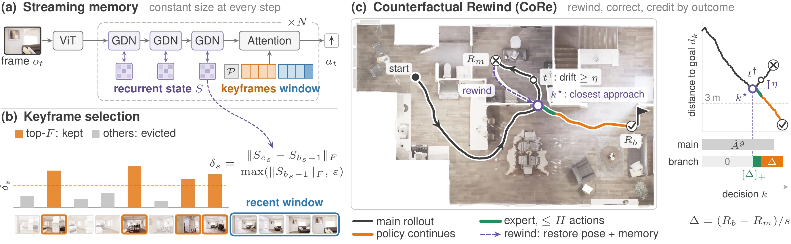
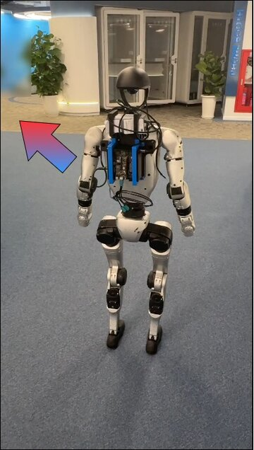
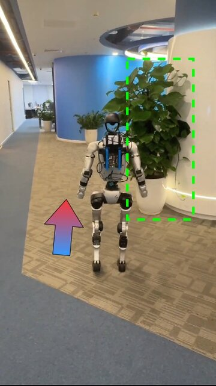
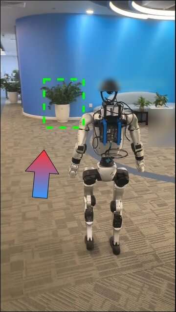
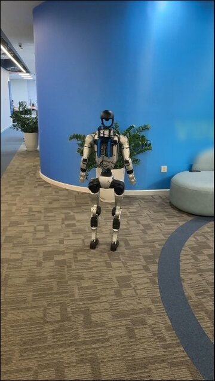
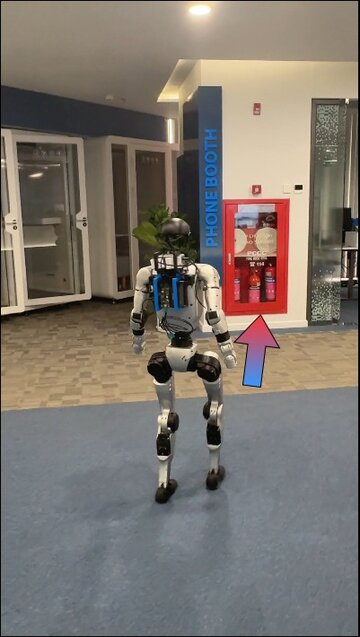
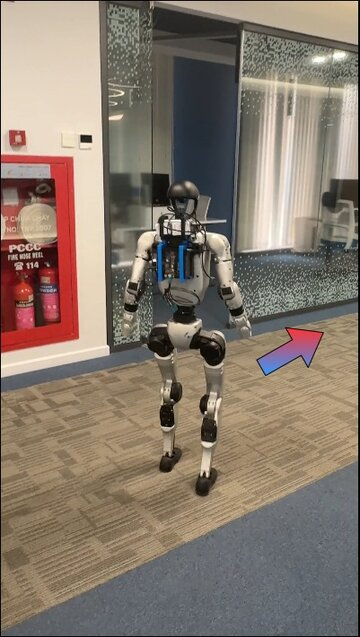
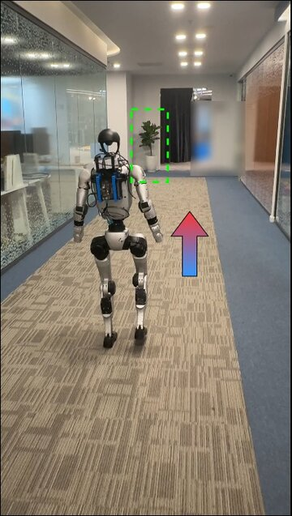
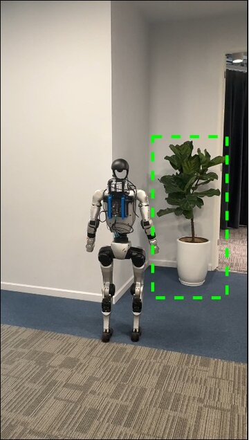

T2 · long-range
2× speed
A 4B GlanceNav trained without external data, on R2R-CE and RxR-CE val-unseen.
Multimodal large language models (MLLMs) have become strong policies for vision-and-language navigation (VLN). However, most of them encode a sample of past frames again at every decision and are trained on isolated decisions, so computation is redundant and the usable history is short. They also learn from their own mistakes through outcome rewards that give one scalar to a whole episode. We ask whether a navigator can encode each frame only once, at a constant cost per step, and still remember what matters and learn efficiently from its mistakes.
We present GlanceNav, a streaming navigator built on a hybrid MLLM. Its Gated DeltaNet layers carry a recurrent state through the whole episode, while its attention layers keep a short window of recent observations and a small bank of keyframes, selected by how much each frame changes the recurrent state. This constant-size memory keeps the cost per step fixed and allows training on whole episodes with the same memory as at inference. Because the entire memory can also be copied in constant time, we further propose Counterfactual Rewind (CoRe), a reinforcement learning stage that rewinds a drifting rollout to its closest approach to the goal, lets an expert correct a few actions, and credits decisions by the resulting change in outcome.
Trained only on the R2R-CE and RxR-CE training splits, with 1,000 instructions for reinforcement learning, a 4B GlanceNav reaches success rates of 71.9% and 73.6% on R2R-CE and RxR-CE val-unseen. On R2R-CE, it outperforms the strongest previous single-RGB method trained without external data by 9.1 points, while running at 104 ms per step.
Most MLLM navigators treat each step as video question answering and re-encode about eight sampled frames at every decision. GlanceNav encodes each frame once and keeps a fixed-size memory.

Each frame is processed again for every later decision that samples it, and the policy cannot see what falls outside the sample. Streaming KV caches avoid re-encoding but grow with the episode, so they are bounded, and whatever leaves the cache is gone.
Outcome-based RL such as GRPO gives one reward to a whole rollout and learns mostly from instructions with mixed success and failure, which become rarer as the policy improves.
GlanceNav builds on a hybrid MLLM (Qwen3.5-4B). Most of its layers are Gated DeltaNet (GDN) layers that fold every token into a fixed-size recurrent state; a few are softmax attention. The question becomes not which history to keep, but which few frames should also be kept exactly.

GDN states are carried through the whole episode and never evicted. They summarize every observation in a fixed-size state (48 MiB), whatever the episode length.
Each attention layer keeps the exact KV rows of the instruction prefix and the W = 4 most recent steps, with their visual and action tokens.
Frames that leave the window compete for F = 4 slots per attention layer, ranked by how much they changed the recurrent state below. Kept rows are never re-encoded.
A frame that the state already predicts barely changes it; a frame with new content, such as a new room, changes it a lot and is kept. The score has no parameters and is computed once, when the frame is encoded:
Unrolling the gated delta rule over a frame shows what the score measures: the frame scores high if the state could not predict it (large residuals are written), or if it makes the state forget, as at a room transition.
Keyframes are selected from the past only, so the memory of every step can be built inside one forward pass over a whole episode with a block-sparse attention mask. GlanceNav is trained on entire episodes with exactly its test-time memory, instead of on isolated decisions. The training and streaming paths agree on the top response token in 99.5–100% of cases.
| Step-wise | Episode-level (ours) | |
|---|---|---|
| History per decision | 8 sampled frames | state + window + bank |
| Frames encoded per epoch | 27.0M | 3.13M |
| Decisions per forward pass | 1 | 102 |
| Training time per epoch (4× H100) | 42.6 h | 13.5 h |
| R2R-CE SR / SPL | 46.5 / 42.3 | 52.4 / 48.7 |
Same Qwen3.5-4B backbone and data (30.8K episodes, 3.13M actions), one epoch. The step-wise model comes from a separate code base, so the SR row compares two systems.
Because the memory has a constant size, a snapshot of the agent's entire memory takes 136 MiB and 1.4 ms to copy at any step. CoRe uses these snapshots to turn a drifting rollout into a contrast between two outcomes from the same state.
A rollout is triggered at the first decision t† where it is a margin η = 1 m farther from the goal than its best so far.
Restore the simulator pose and the full streaming memory at k*, the rollout's closest approach to the goal, in O(1).
A shortest-path expert redoes at most H = 16 actions, written into the agent's own memory; then the policy finishes the episode.
The branch–main return difference Δ credits the policy's continuation, and the expert's actions only when the branch did better.
R2R-CE val-unseen SR. RL rows use one pass over the same 1,000 mixed R2R-CE + RxR-CE instructions (500 from each), with the same order and seed.
Share of instruction groups with an outcome contrast, by quarter of RL training.
As GRPO improves, fewer groups mix success and failure (64% → 36%). CoRe keeps about 60% of groups informative; 75% of its branches succeed and they rescue 53% of failed main rollouts.
GlanceNav (4B, no external data) against single-RGB navigators on R2R-CE and RxR-CE val-unseen. In the table, best and second best among single-RGB methods are in bold and underlined.
| R2R-CE val-unseen | RxR-CE val-unseen | ||||||||
|---|---|---|---|---|---|---|---|---|---|
| Method | Backbone | NE↓ | OS↑ | SR↑ | SPL↑ | NE↓ | SR↑ | SPL↑ | nDTW↑ |
| Panoramic, depth or multi-view input (for reference) | |||||||||
| GridMM | – | 5.11 | 61.0 | 49.0 | 41.0 | – | – | – | – |
| Reborn | – | 5.40 | 57.0 | 50.0 | 46.0 | 5.98 | 48.6 | 42.1 | 63.4 |
| NavMorph | – | 5.75 | 56.9 | 47.9 | 33.2 | 8.85 | 30.8 | 22.8 | 44.2 |
| AgentVLN | 3B | 3.88 | 73.5 | 67.2 | 64.7 | 3.92 | 69.5 | 61.3 | 74.6 |
| OmniNav‡ | 3B | 3.74 | 74.6 | 69.5 | 66.1 | 3.77 | 73.6 | 62.0 | – |
| Qwen-RobotNav‡ | 8B | 3.53 | 78.5 | 72.1 | 66.6 | 3.58 | 76.5 | 65.7 | 72.5 |
| Single RGB, trained with external data | |||||||||
| NaVid | 7B | 5.47 | 49.1 | 37.4 | 35.9 | 8.41 | 23.8 | 21.2 | – |
| Uni-NaVid | 7B | 5.58 | 53.3 | 47.0 | 42.7 | 6.24 | 48.7 | 40.9 | – |
| ActiveVLN | 3B | 5.31 | 58.3 | 50.1 | 43.7 | 5.84 | 50.7 | 41.2 | 58.1 |
| NaVILA | 8B | 5.22 | 62.5 | 54.0 | 49.0 | 6.77 | 49.3 | 44.0 | 58.8 |
| InternVLA-N1 (S2) | 7B | 4.89 | 60.6 | 55.4 | 52.1 | 6.41 | 49.5 | 41.8 | 62.6 |
| NavFoM | 7B | 5.01 | 64.9 | 56.2 | 51.2 | 5.51 | 57.4 | 49.4 | 60.2 |
| StreamVLN | 7B | 4.90 | 63.6 | 56.4 | 50.2 | 5.65 | 54.4 | 45.4 | 63.7 |
| JanusVLN† | 7B+1B | 4.78 | 65.2 | 60.5 | 56.8 | 6.06 | 56.2 | 47.5 | 62.1 |
| NaVIDA | 3B | 4.32 | 69.5 | 61.4 | 54.7 | 5.23 | 57.4 | 49.6 | 67.0 |
| DualVLN | 7B | 4.05 | 70.7 | 64.3 | 58.5 | 4.58 | 61.4 | 51.8 | 70.0 |
| SACA | 8B | 4.19 | 69.3 | 64.7 | 56.9 | 4.75 | 62.1 | 51.7 | 66.0 |
| CorrectNav | 7B | 4.24 | 67.5 | 65.1 | 62.3 | 4.09 | 69.3 | 63.3 | 75.2 |
| FutureNav† | 4B+1B | 4.24 | 70.2 | 65.4 | 61.3 | 4.60 | 60.9 | 52.8 | 68.0 |
| Qwen-RobotNav | 4B | 4.22 | 73.6 | 66.9 | 60.5 | 4.15 | 71.3 | 61.5 | 68.6 |
| Qwen-RobotNav | 8B | 4.36 | 72.7 | 65.7 | 59.6 | 4.16 | 73.4 | 63.5 | 69.9 |
| SeekVLN | 8B | 3.7 | 75.2 | 67.5 | 61.4 | 4.9 | 59.7 | 50.3 | 63.6 |
| Efficient-VLN | 8B | 3.29 | 78.2 | 73.2 | 65.0 | 3.18 | 75.6 | 60.0 | – |
| Single RGB, R2R-CE and RxR-CE only: expert demonstrations | |||||||||
| JanusVLN† | 7B+1B | 5.17 | 58.0 | 52.8 | 49.2 | 6.46 | 51.4 | 44.3 | 59.1 |
| FutureNav† | 4B+1B | 5.13 | 61.8 | 55.1 | 50.1 | 5.62 | 54.5 | 46.0 | 61.8 |
| AdaGeoVLN† | 4B+1B | 5.27 | 60.7 | 55.7 | 51.4 | 5.64 | 54.1 | 44.7 | 61.8 |
| StageVLN | 4B | 5.17 | 64.7 | 56.3 | 51.4 | 5.65 | 54.3 | 42.8 | 58.3 |
| Single RGB, R2R-CE and RxR-CE only: demonstrations and on-policy training (DAgger, recovery data or RL) | |||||||||
| MonoDream | 2B | 5.45 | 61.5 | 55.8 | 49.1 | 6.38 | 49.4 | 40.9 | – |
| BudVLN | 7B | 4.74 | 65.6 | 57.6 | 51.1 | 5.79 | 56.1 | 46.6 | 63.2 |
| SACA | 8B | 4.57 | 64.9 | 60.3 | 55.1 | 4.90 | 60.3 | 49.8 | 62.1 |
| ReflectVLN | 2×3B | 4.19 | 67.3 | 62.8 | 58.5 | 3.98 | 66.0 | 57.2 | – |
| GlanceNav (ours) | 4B | 3.32 | 78.6 | 71.9 | 63.7 | 3.55 | 73.6 | 59.6 | 70.7 |
† additional geometry encoder. ‡ multi-view RGB. Gray rows use panoramic, odometry, depth or multi-view input and are shown for reference only. Published numbers as reported by each method.
Each step processes only the tokens of one new observation. Attention reads a bounded number of rows and the GDN state has a fixed size, so step time stays flat along the episode.
Milliseconds per policy call; lower is better.
Median step time (ms) along a 500-step episode, same backbone, RTX PRO 6000.
| RTX 5090 | RTX PRO 6000 | Jetson AGX Orin | ||||
|---|---|---|---|---|---|---|
| Method | GiB↓ | ms↓ | GiB↓ | ms↓ | GiB↓ | ms↓ |
| JanusVLN | OOM | OOM | 35.73 | 481.3 | 35.7 | 7389.8 |
| NaVILA | 17.47 | 365.2 | 17.47 | 383.1 | 17.5 | 3531.0 |
| StreamVLN | 17.48 | 233.4 | 17.48 | 209.8 | 17.6 | 2135.5 |
| StageVLN | 10.24 | 304.5 | 10.24 | 229.8 | 10.2 | 2175.8 |
| GlanceNav | 8.68 | 135.7 | 8.68 | 103.9 | 8.9 | 839.1 |
Peak VRAM and step time per policy call (StreamVLN may emit up to four actions per call). Desktop baselines from StageVLN; Jetson numbers measured with the same protocol. OOM: out of memory on the 32 GB RTX 5090.
Each row is a separately trained model.
Stage-1 val-unseen SR. Frames = W + F visible to an attention layer.
| Memory | W | F | Frames | R2R-CE | RxR-CE |
|---|---|---|---|---|---|
| Window only | 4 | 0 | 4 | 48.7 | 55.0 |
| 8 | 0 | 8 | 49.0 | 55.3 | |
| 12 | 0 | 12 | 51.2 | 56.7 | |
| Window + bank | |||||
| 2 | 4 | 6 | 49.2 | 56.2 | |
| 4 | 2 | 6 | 50.8 | 58.3 | |
| ours | 4 | 4 | 8 | 52.4 | 56.6 |
| 4 | 8 | 12 | 51.3 | 57.4 | |
| 8 | 4 | 12 | 51.0 | 56.0 | |
With eight visible frames, four steps plus four keyframes beat an eight-step window by 3.4 SR; a window alone needs twelve frames to come close.
R2R-CE val-unseen, RL on 1,000 R2R-CE instructions only (the Training stages chart uses mixed R2R-CE + RxR-CE instructions); single runs.
| Method | SR | SPL | OS |
|---|---|---|---|
| GRPO, G = 4 | 64.3 | 57.3 | 72.4 |
| GRPO, G = 5 (same compute) | 66.5 | 58.7 | 75.2 |
| CoRe variants | |||
| Self-rewind: policy acts in branch | 67.3 | 59.6 | 74.2 |
| Branch at the trigger t† | 66.7 | 57.3 | 76.9 |
| Imitate every correction | 67.0 | 59.3 | 76.3 |
| No credit for expert actions | 64.9 | 57.7 | 74.6 |
| CoRe (η = 1 m, H = 16) | 68.7 | 60.9 | 76.7 |
The outcome-filtered credit on expert corrections carries most of the gain; extra GRPO rollouts at matched compute do not close the gap.
Stage-1 R2R-CE SR, W = 4, bank of four frames' worth of rows.
| Selection rule | Unit | SR | SPL |
|---|---|---|---|
| Window only | – | 48.7 | 45.0 |
| Committed write β‖e‖ (HOLA) | token | 51.7 | 48.4 |
| Prediction error ‖e‖ | token | 50.1 | 46.5 |
| Mean committed write | frame | 49.3 | 45.5 |
| New-writes term only | frame | 51.6 | 48.7 |
| Learned linear ranker | token | 51.7 | 48.2 |
| State change δs (ours) | frame | 52.4 | 48.7 |
Selected rows of the ten parameter-free scores and two learned rankers in the paper. A randomly filled bank does not help at all.
R2R-CE val-unseen, from Stage 1, one epoch. TL: trajectory length (m).
| Training data | SR | SPL | OS | TL |
|---|---|---|---|---|
| Stage 1 | 52.4 | 48.7 | 58.0 | 9.4 |
| DAgger, executed actions | 52.0 | 42.4 | 70.3 | 16.0 |
| DAgger, oracle relabeling | 58.8 | 45.0 | 72.7 | 15.7 |
| + STOP correction | 60.7 | 48.8 | 73.2 | 15.1 |
| + demonstrations (Stage 2) | 63.7 | 56.7 | 70.6 | 11.2 |
Supervising executed actions imitates the learner's mistakes; relabeling every visited state with the expert's action adds 6.8 points with the same inputs.
Trained only in simulation (R2R-CE and RxR-CE), GlanceNav follows free-form instructions in an unseen office building, with no fine-tuning on real-world data. Every video is an uncut rollout, shown at 2× speed.
Episode A, key moments. The robot turns at the intersection, passes the first plant, and stops in front of the next potted plant near the blue couch.




Episode B, key moments. The robot reaches the red fire-extinguisher cabinet, turns right, follows the hallway, and stops at the plant at its end.




@article{dao2026glancenav,
title = {GlanceNav: Efficient Vision-and-Language Navigation
with Streaming Memory and Counterfactual Rewind},
author = {Dao, Anh and Pham, Quan-Dung and Le, Danh Vinh and
Le, Tuyen Pham and Nguyen, Quan and Shang, Yuzhang},
journal = {arXiv preprint},
year = {2026}
}